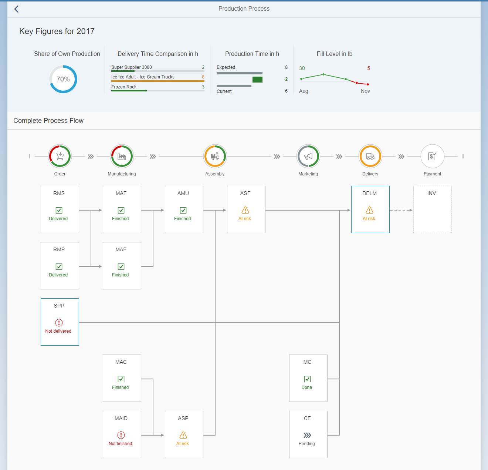

Step 13: Optimizing the Process Flow Layout
Step 13: Optimizing the Process Flow Layout
In the last step, we will optimize the ProcessFlow
layout.
When you have completed the previous steps, your Production Process page will look like this:

You may have seen that some ProcessFlow nodes are not placed in a
perfect way. For example, there is too much space for the
Marketing node and available space is not used. To optimize
the position of the nodes, the ProcessFlow control provides the
optimizeLayout API method. With this method, you can
rearrange the nodes. Check it out and see the results:

Please keep in mind that this optimization has an influence on the app performance as rendering times will increase.
For more information, see the API Reference in the Demo Kit.
Parent topic: Ice Cream Machine
Previous: Step 12: Timeline